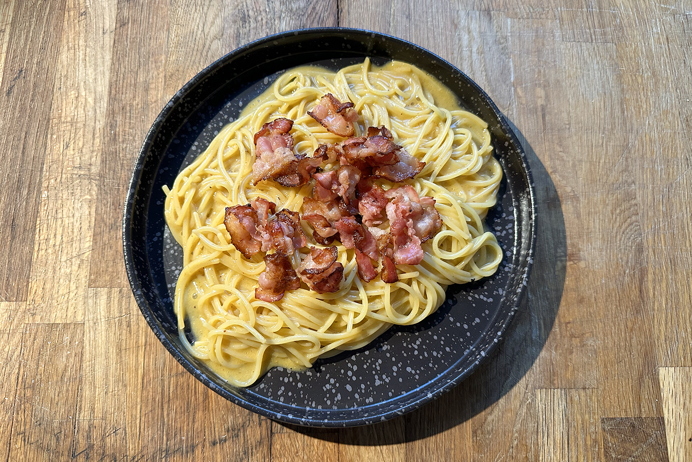

Karbonara

Description
The resipe of the delicious pasta carbonara
Ingridients
- 12 oz (340g) spaghetti or fettuccine
- 4 large eggs
- 1 cup grated Parmesan cheese
- 6 oz (170g) pancetta or bacon, diced
- 3 garlic cloves, minced
- Salt and black pepper to taste
- Fresh parsley, chopped (optional, for garnish)
Recipe
- Cook pasta in a large pot of salted boiling water until al dente. Reserve 1 cup of pasta water, then drain.
- In a bowl, whisk together eggs and Parmesan cheese until smooth. Set aside.
- In a large skillet, cook pancetta or bacon over medium heat until crispy. Add minced garlic and cook for 1-2 minutes until fragrant. Remove from heat.
- Add the drained pasta to the skillet and toss to coat in the pancetta and garlic.
- Quickly pour the egg and cheese mixture over the hot pasta, stirring constantly to create a creamy sauce. Add reserved pasta water, a little at a time, if needed to loosen the sauce.
- Season with salt and plenty of black pepper. Garnish with parsley if desired and serve immediately. Enjoy!